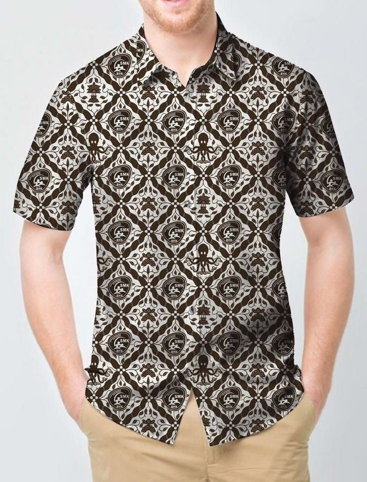
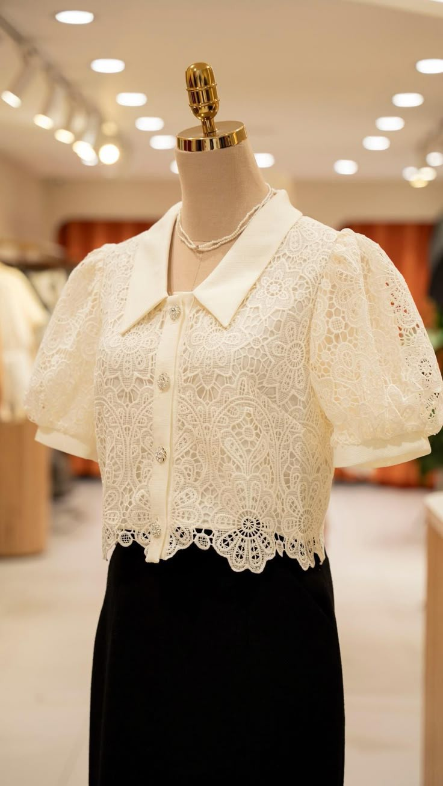
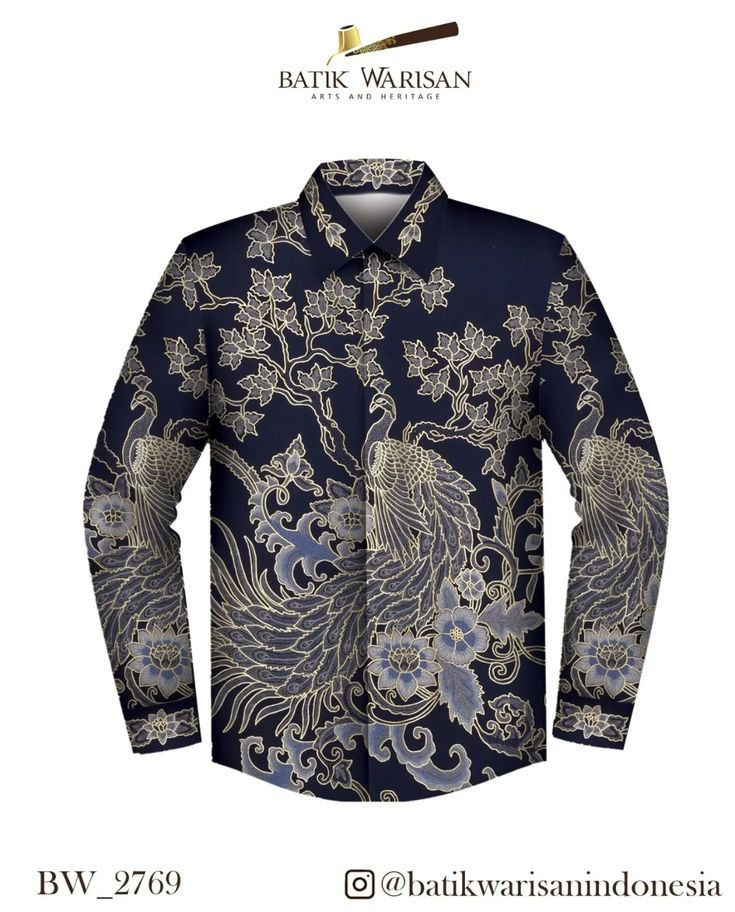
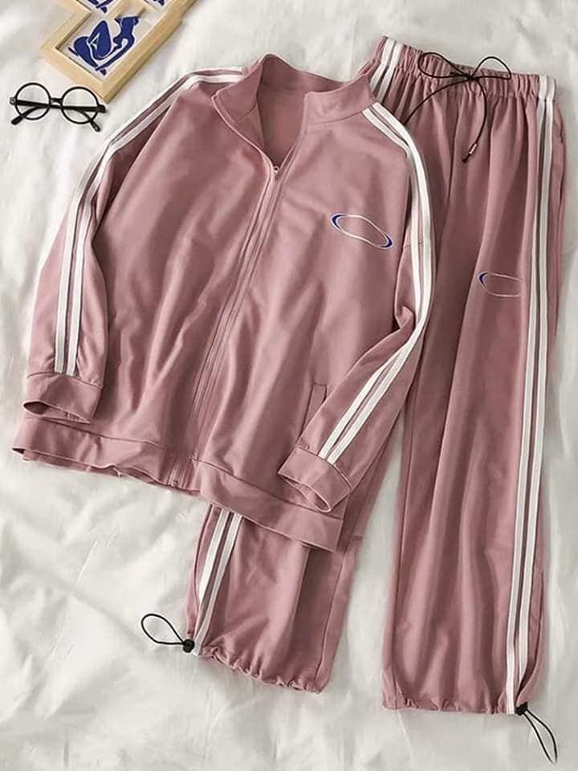
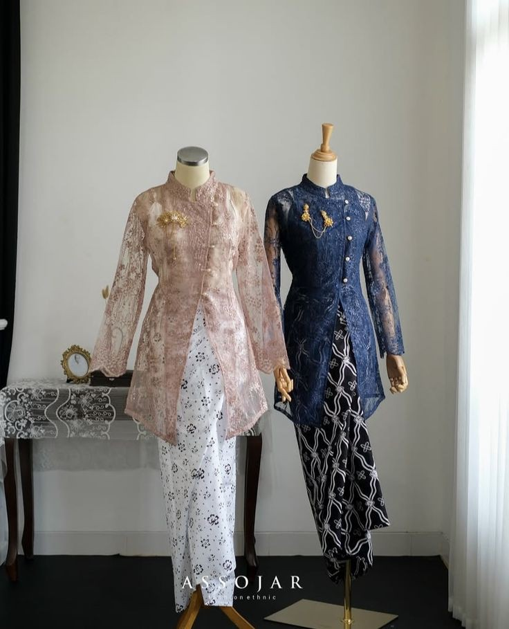
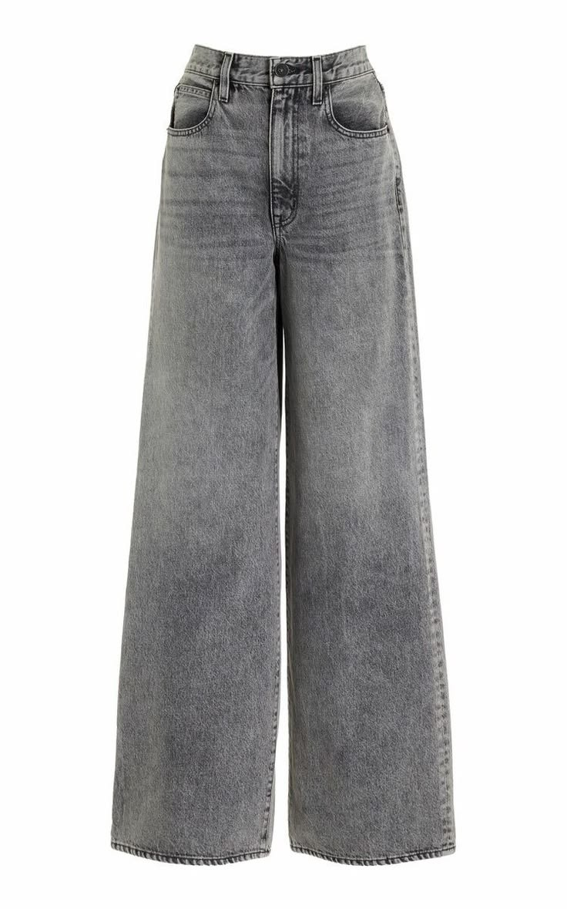

Dokumentasi berbagai pakaian dan seragam yang telah selesai dikerjakan oleh Arlin Busana.

Pembuatan seragam batik identitas sekolah lengkap dengan logo bordir.

Pesanan jahit baju wanita dengan lapisan furing lembut dan potongan payung.

Baju laki-laki dengan motif batik selaras pada bagian sambungan kancing.

Setelan kaos dan celana training olahraga siswa bahan katun nyaman.

Setelan busana wanita untuk acara resmi dengan detail payet rapi.

Perbaikan ukuran pinggang dan pemotongan panjang celana standar pabrik.